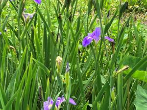

うるがいの話 ある日
最新: ４歳【うるがいの話 ある日】とは 一日だけのプログです
『うるがいの話』の最新一日だけのプログで、通信料が少なく経済的だ。カニの画像をクリックすると全ての日付が載る『うるがいの話』サイトを表示します
|
|
【うるがいの話】 うるがい(ｳﾙｶﾞｲ urugai)とは、『もずくがに』の名前でとても大きくなります。 |
|---|---|
|
|
【カミマヤーの話】 猫のことを方言でマヤーといいます。カミマヤー（kamimayaa）とは、神の猫のことです。 |
|
【たながぁの音楽】 たながぁ（ﾀﾅｶﾞｰ tanagaa）とは手長えびのことで、何種類かあり大きいのは車 エビぐらいになります。 |

|
【ぶながぁの話】 ぶながぁ(ﾌﾞﾅｶﾞｰ bunagaa)とは、赤い髪の毛、赤い身体、そして身長は１ｍ２０ｃｍ ぐらい、川の蟹を食べているの目撃された。場所は沖縄県国頭郡大宜味村のと ある村僕の隣近所に住んでいる爺さんから、聞いた話です。 |
|
|
【ギーマの話】 ギーマ(giima)とは、山原の里山に咲くスズランに似た、 花を付けます。実は食べられます、 気が付くと口の周りが紫になっています。 |
2023年05月23日 (火）４歳
15:39

息の発見 / 五木 寛之/玄侑 宗久【著】から引用
玄侑
でも、実際にはその前から、三歳くらいからお経を唱えはじめているんです。
五木
三歳、そんなに小さいころから。お寺の跡取りさんが、最初に覚えるお経はど
んなものですか。
玄侑
最初は、三歳ころですが、非常に短い「舎利礼文（しやりらいもん）』という
のを覚えました。四歳になると、暗記したら三百円あげるといわれて、『般若
心経』を三日で覚えた記憶がありますね。そのときの息づかいは、いまはすっ
かり忘れてしまいましたが、本堂で父親の前で唱えて、無事三百円を手にして
、まっしぐらにプラモデルを買いに走ったことだけは鮮明に覚えています。
４歳になる甥っ子が、姉に怒られていた。『お菓子を買ったらダメっていった
でしょう！』。アル中の姉は、甥っ子に酒を買って来いと近くにあるスーパに
お使いに行ったかえり、お菓子を買って来たのを酔っ払いながら叱っていたの
である。社会人になる前に姉のアパートに寄った私は、それを見て『４歳の子
供になんてことを』と姉を咎める。この救いのない姉のお陰で『般若心経』を
覚えたのは、２０台半ば、その後さらに救いを求め『観音経』を、覚えたのは
３０代前か。哀れな甥っ子の今は、多分幸せな日々を送っていると思う。因み
に私は４歳の記憶は全くありません。
コドモから、これからガンボジアへ行くと連絡があった。
１５時３６分 ビットコインの総資産 ￥１０、９６５（↑２２４）